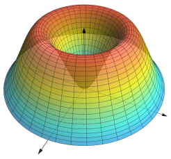

3D Examples
rvals = range(0,2,length=40)
thetavals = range(0,2π,length=40)
f(x,y) = 5*(x^2+y^2)*exp(-x^2-y^2)
xv = [r*cos(θ) for r=rvals,θ=thetavals]
yv = [r*sin(θ) for r=rvals,θ=thetavals]
zv = [f(r*cos(θ),r*sin(θ)) for r=rvals,θ=thetavals]
Plot(Surface(xv,yv,zv,meshpen=Pen(color=0.1*NamedColor(1,1,1),linewidth=0.3),
surfacepen=Pen(opacity=0.8)),
camera=(4,2,5),
xmax=2.2,
ymax=2.2)
r(u) = 2-cos(u);
x(u,v) = 3*cos(u)*(1+sin(u))+r(u)*cos(v)*(u < pi ? cos(u) : -1)
y(u,v) = 8*sin(u)+(u < pi ? r(u)*sin(u)*cos(v) : 0)
z(u,v) = r(u)*sin(v)
U = range(0,2π,length=60)
V = range(0,2π,length=30)
sp = Pen(opacity=0.9)
c = ["LightBlue","MidnightBlue","LightBlue"]
mp = Pen(color=0.2*NamedColor(1,1,1),linewidth=0.3)
Plot(Surface([x(u,v) for u=U,v=V],
[y(u,v) for u=U,v=V],
[z(u,v) for u=U,v=V],surfacepen=sp,meshpen=mp,colors=c),
axes=false,camera=(10,-15,8))